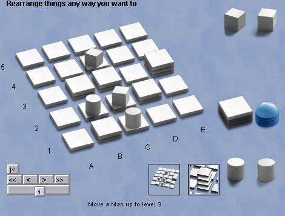

Santorini
Santorini est un jeu abstrait auquel ses composants minimalistes donnent une apparence frappante et unique. À partir d'une grille horizontale de 5x5 tuiles, les joueurs déplacent deux hommes chacun et ajoutent des tuiles en empilement pour essayer d'atteindre le troisième niveau au-dessus de la base. Le jeu de base devient moins abstrait avec l'ajout de dieux et de héros, qui modifient les règles de base.
Les règles officielles sont ici, mais, en bref, vous commencez par placer vos hommes, puis, à chaque tour, vous en déplacez un et ajoutez une nouvelle tuile à côté de l'homme que vous avez déplacé. Vous pouvez descendre librement, mais ne pouvez monter que d'un niveau à la fois. Au-dessus du troisième niveau, c'est un dome que l'on ajoute. Le joueur qui réussit à faire monter l'un de ses hommes au troisième niveau gagne. Si aucun de vos joueurs ne peut bouger, vous avez perdu.
Robots : ils m'ont l'air assez agressifs, mais nous verrons ce qu'en pensent les experts.
|

|